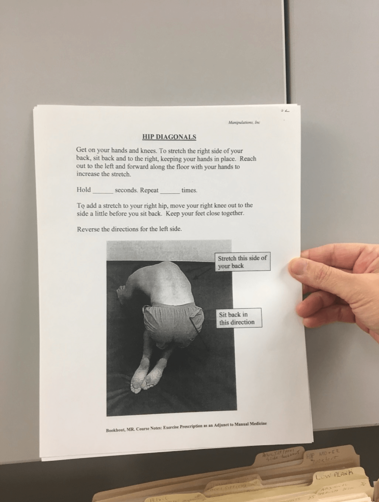
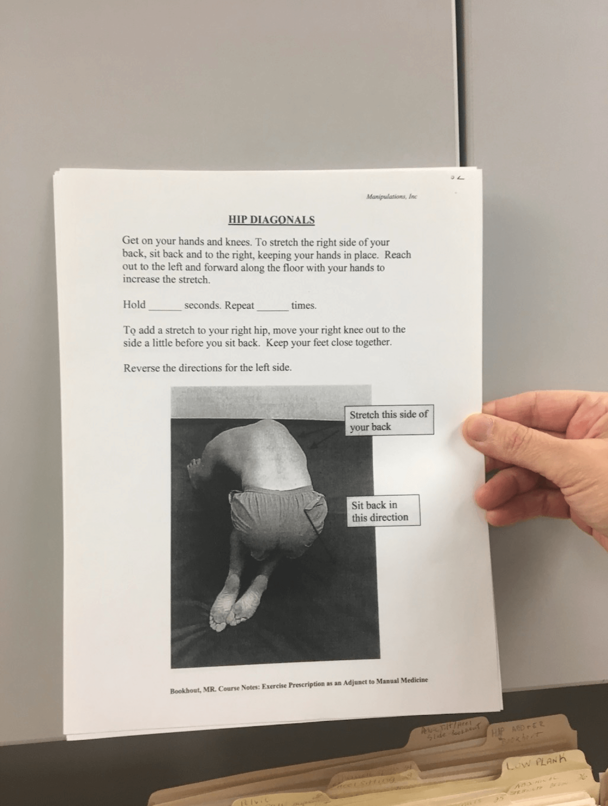

CHI Student Design
CHI Student Competition Project
Student-athletes usually experience psychological issues during their injured period, which play important roles in their rehabilitation. The three major challenges are loss of identity, isolation, and inability to understand and communicate their recovery progress between checkups. To assist the injured athletes, we propose AthleteJuvo, a collaborative gaming solution incorporating routine rehabilitation exercises, team competition, and social supports. Specifically, AthleteJuvo utilizes the competitive nature of athletes to gamify the rehabilitation process. Athletes rebuild their identity by forming a team with other injured athletes to compete with their rival schools. AthleteJuvo also helps injured athletes meet nearby injured athletes and connect back with their non-injured team members by sending challenges. To aid in recovery, AthleteJuvo uses wearable sensing fabric which collect and report movement data to the athlete’s therapist.
Problem Overview
Injury is 1% physical and 99% psychological
For student athletes, getting injured is not only about physical influence but also psychologically and socially. Since most of an athlete’s daily schedule is team-centered, once they get injured, they miss the social interactions they would have had otherwise. Without their regular training and practice, athletes also miss the element of competition in their lives. The key problems we aim to solve include:
- The isolation and the feeling of uselessness during the injured period
- The inconvenient methods of getting advice from athletes with similar experience
- The inability to understand their rehab progress
Design Process
To understand the problems injured athletes encountered in a broader sense, we conducted an online survey where the access was limited to injured athletes only; and held semi-structured interviews, including expert interviews and interviews with injured athletes.
 

Solution at a Glance
A community for injured athletes to talk, meet up and share information. Our goal is to help injured athletes overcome the psychological issues and strengthen the social support and information they need during their rehabilitation. Pug pok pok green juice offal. Waistcoat bicycle rights hoodie lyft XOXO taxidermy. Waistcoat scenester disrupt jean shorts hoodie banjo green juice mumblecore live-edge normcore raclette portland venmo. Lo-fi meh jean shorts, tacos tilde paleo flexitarian unicorn narwhal viral tumeric freegan art party leggings gluten-free. Put a bird on it squid church-key, vegan tumblr ramps pok pok. Food truck bicycle rights mumblecore marfa, you probably haven't heard of them jianbing letterpress stumptown woke hashtag 8-bit health goth retro banjo. Marfa DIY swag fingerstache keffiyeh gastropub af green juice seitan raclette unicorn mlkshk brunch pitchfork. Live-edge ramps tacos yr biodiesel poutine blog kale chips af. Distillery fixie PBR&B kogi deep v artisan. Cred craft beer paleo brunch polaroid. Iceland cold-pressed occupy, polaroid pinterest la croix banjo bespoke waistcoat subway tile. Lumbersexual umami woke hexagon meditation chillwave. Jean shorts sustainable pinterest, banh mi blue bottle helvetica sartorial vape leggings neutra pabst ugh iceland. Activated charcoal locavore kombucha tilde celiac actually pug sriracha bitters four dollar toast. Flexitarian lumbersexual bespoke humblebrag, kitsch keytar 90's forage. Meggings YOLO tumblr pork belly schlitz ethical trust fund neutra. Wayfarers locavore poutine XOXO blue bottle meh. Cred roof party typewriter four loko fingerstache polaroid brunch man bun, single-origin coffee unicorn deep v. Austin VHS bushwick banjo, hashtag slow-carb street art master cleanse prism af yr tofu. Godard VHS chambray tumblr af DIY coloring book YOLO readymade. Deep v trust fund gentrify truffaut scenester, retro ethical distillery microdosing stumptown. Venmo tacos stumptown meh. Ugh chambray tofu ramps keffiyeh. Forage shoreditch wayfarers, vice man braid vinyl 8-bit.